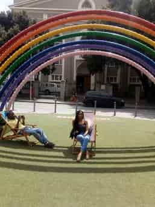
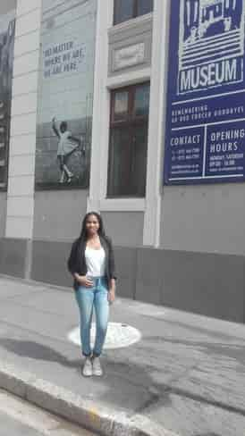

Phindi Nqanqaru


The place i would like to visit Jamaica
Jamaica is about the most beautiful island in the world. Jamaica offers a vast expanse of spectacular white sand beaches. making them the perfect place to relax.Foreign laungage i would like to learn is Spanish
| English phrase | Spanish phrase |
|---|---|
| I love programming | Me encanta programar |
| This was amazing week | Esta fue una semana increible |
| God is my first love | Dois es mi primer amor |
Historical places in Cape Town
Church street!
Church Square is one of the three early areas of land. In 1701 the Dutch Reformed Church, known as the Groote Kerk. Originally the square served as the site of the slave market.
Castle of Good Hope!
The Castle Military Museum houses an impressive array of military artifacts and exhibits from the 17th to the 19th
Greenmarket square!
Strand Street, or Sea Street as it was previously known. Greenmarket Square probably developed early on when the VoC brought vegetables from its adjoining garden to this place for sale to Cape Town residents.